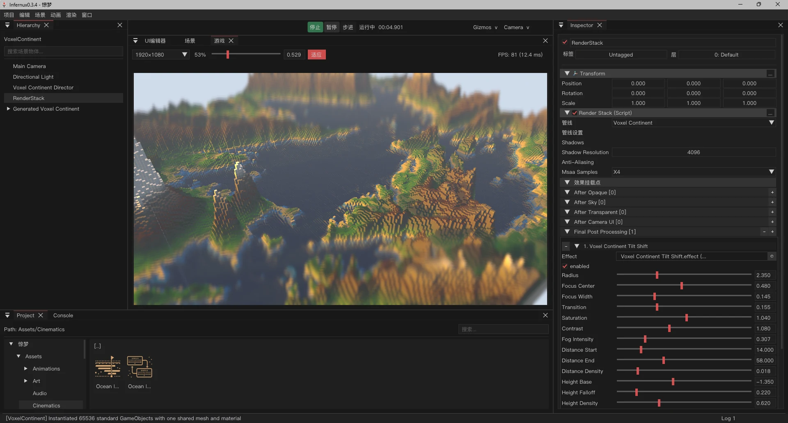

PRINCIPLE I · Fast inner loop
Python scripts, hot-reload, asset previews, and editor-side tooling keep the iteration loop under a second without weakening the native runtime core.
C++ / Vulkan core · Python production layer · repository-first
Infernux pairs a C++17/Vulkan runtime with a Python 3.12 production layer. Version 0.3.5 applies small fixes and stability improvements to the broad 0.3.4 engine foundation.
Windows 10/11 x64 · Infernux 0.3.5 · broader platforms in development
from Infernux import InxComponent, Vector3
from Infernux.coroutine import WaitForSeconds
class Mover(InxComponent):
def awake(self) -> None:
self._dir = 1.0
def start(self) -> None:
self.start_coroutine(self.pulse())
def update(self, delta_time: float) -> None:
v = Vector3(0.2 * self._dir, 0.0, 0.0)
self.transform.translate(v * delta_time)
def pulse(self):
while True:
yield WaitForSeconds(0.5)
self._dir = -self._dir熔炉 is shaped around a simple position: keep the hot path native, keep the workflow scriptable, and keep the architecture readable enough that a team can actually take ownership of it instead of negotiating with a vendor.
This real editor capture combines standard scene objects, shared lit rendering, per-camera shadows, and a custom RenderStack tilt-shift treatment in one authored scene.

The engine is shaped around engineering control rather than platform lock-in. Each principle reduces hidden cost for teams building real games and real tools.
Python scripts, hot-reload, asset previews, and editor-side tooling keep the iteration loop under a second without weakening the native runtime core.
RenderGraph, RenderStack, and material descriptors are inspectable and scriptable from Python. The render path is meant to be extended, not hidden.
MIT licensing and repository-first development keep the cost model simple: the work is in the code, not in negotiating with a vendor.
Version 0.3.5 is the current maintenance release on top of the broad 0.3.4 rendering, simulation, authoring, scripting, automation, asset and Player foundation.
Forward, Forward+ and Deferred routes, PBR, per-camera shadows, reusable Effect assets, structured GLSL, RenderGraph scheduling, and a Python-programmable RenderStack.
Typed emitter, Init, Update and Rendering stages compile to runtime IR ahead of time, with sprite/mesh outputs, editor preview and live parameters.
Rigid bodies, colliders, scene queries, collision callbacks, layer filtering, and scene-synchronized transforms backed by Jolt Physics.
2D clips, sprite playback, FBX takes, skeletal animation, skinned meshes, reusable state-machine graphs, and Timeline authoring share one document foundation.
Authoring panels converge on shared selection, commands, shortcuts, documents, save, conflicts and undo/redo services.
Unity-style component lifecycle, serialized inspector fields, decorators, input APIs, coroutines, prefabs, hot-reload, and a built-in @njit decorator that opts in to Numba JIT with automatic pure-Python fallback.
GUID identity, dependency indexing, Library artifacts, live previews, transactional documents, and structured Player exports separate authoring from runtime content.
Operate a visible project through public workflows, inject frame-bounded input, inspect semantic state, and report blockers without embedding MCP into exported games.
Version 0.3.5 is a small maintenance release following the broad 0.3.4 engine update. The current public baseline remains Windows-first while the next platform plan is prepared.
Version 0.3.5 carries the 0.3.4 runtime, editor, rendering and Player foundation forward with small fixes and stability improvements.
GPU Particle Graph, programmable render routes, shared editor interaction, and a Library-only Player cook are part of this version.
熔炉 exists for teams who want source access, architectural clarity, and a workflow they can actually reshape. Start with the docs, inspect the code, and push the engine further.